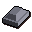

Silver bar

| Config name | silver_bar |
| Item id | 2355 |
| Value | 150 gp |
| Weight | 4lb |
| Members | No |
| Tradeable | Yes |
| Stackable | No |
| Defined in | scripts/skill_smithing/configs/smelting/smelting.obj |
Silver bar
It's a bar of silver.
How to make
| Skill | Level | XP | Ingredients | Tool | How | Where | Makes |
|---|---|---|---|---|---|---|---|
| Smithing | 20 | 13.7 | interface | furnace | 1 smelting |
Sold at
| Shop | Shopkeeper | Stock |
|---|---|---|
| Ardougne Silver Stall. | 1 |
Referenced in scripts
scripts/_test/scripts/cheats/cheat_bank.rs2scripts/player/scripts/cracker.rs2scripts/skill_crafting/scripts/jewellery/jewellery.rs2scripts/skill_smithing/scripts/smelting/smelting.rs2